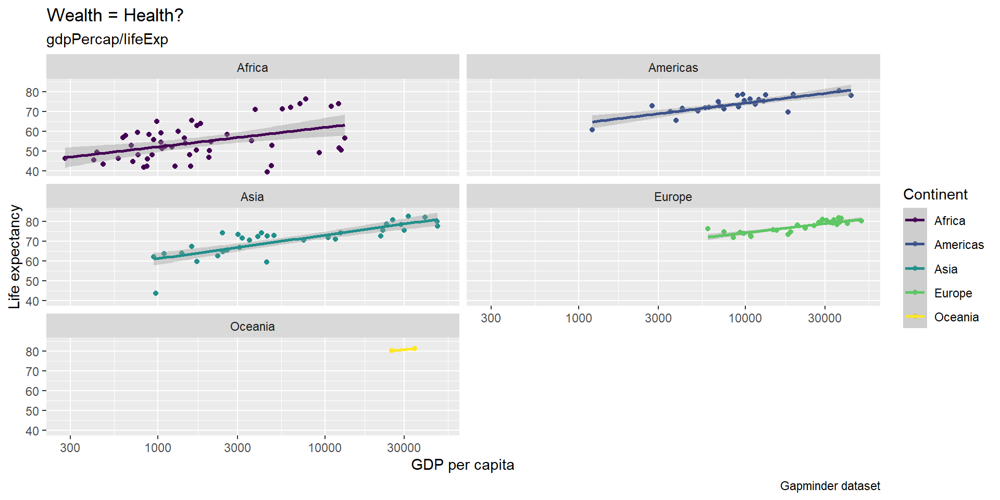
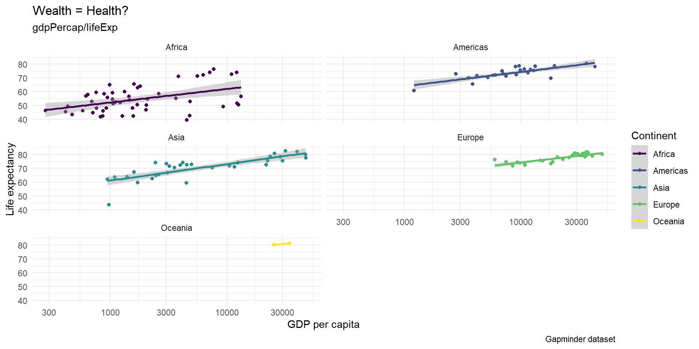
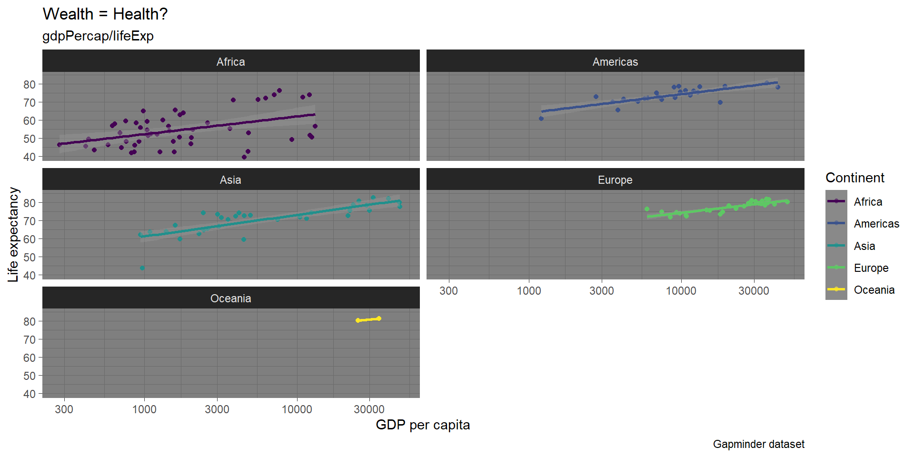

| country | continent | year | lifeExp | pop | gdpPercap |
|---|---|---|---|---|---|
| Afghanistan | Asia | 2007 | 43.828 | 31889923 | 974.5803 |
| Albania | Europe | 2007 | 76.423 | 3600523 | 5937.0295 |
| Algeria | Africa | 2007 | 72.301 | 33333216 | 6223.3675 |
| Angola | Africa | 2007 | 42.731 | 12420476 | 4797.2313 |
Data transformation & visualization
Week 7
David Schweizer
University of Mannheim
November 22, 2023
Plan for today
- Data transformation
- Reminder: How to install R & RStudio
- How to import data
- What is tidy data
- How to transform data using the tidyverse & the dplyr package
- Your turn: Tutorials
⏸️ 15 minute break: Get some fresh air, coffee, …
Data visualization
- How to visualize data using ggplot
Your turn: Tutorial
Data transformation
Reminder: How to install R & RStudio
Importing data
R: use
load("filename.RData")orreadRDS("filename.RDS").Excel: e.g., load
library("xlsx")and useread.xlsx("filename.xlsx").Stata: e.g., load
library("haven")and useread_dta("filename.dta").
Consult the R documentation (e.g. type ?read.xlsx) to get an overview about options (e.g. sheetIndex or startRow).
Importing data manually
Built-in data
There are also many built-in data sets in R. You can have a look at them by using data().
Gapminder data
However, we will use the gapminder data set during this session. Therefore, we have to install the package install.packages("gapminder") first and load it with library("gapminder").
Transform data
“Getting the data into shape” for exploration and analysis.
Common steps for data transformation include:
renaming variables
selecting a subset of variables
filtering a subset of cases
recoding variables or values (also missing values)
creating new variables
80% of your time goes into data transformation and 20% into analysis
Tidyverse
The tidyverse is a collection of R packages designed for data science. All packages share an underlying design philosophy, grammar, and data structures (Tidyverse website).
It is a coherent system of packages for data manipulation, exploration and visualization that share a common design philosophy (Rickert, 2017).
Tidyverse - Benefits
Data transformation with base R is possible, but not as intuitive and more verbose.
- More difficult to learn, remember and read
Tidyverse syntax is designed to increase human-readability.
- Attractive for R beginners as it can facilitate the experience of self-efficacy (see Robinson, 2017)
- The tidyverse also aims for consistency (e.g., data frame as first argument and output)
Tidyverse - Caution
Often, tidyverse functions are under development:
They change and can potentially break your code
Example: Converting tables into long or wide format
You can learn more about the tidyverse lifecycle in this talk by Hadley Wickham.
Tidyverse
Install all tidyverse packages at once (here is the full list of tidyverse packages)
Load core tidyverse packages To save time and reduce namespace conflicts you can also load tidyverse packages individually (e.g., dplyr, ggplot)
Tidyverse: Concepts
There is much more to the tidyverse, but two important concepts that you should be familiar with, if you want to use it, are:
Tidy data
Pipes
Tidy data
The data should be in a so-called “tidy” format for ggplot and the tidyverse’s packages in general. Tidy refers to the structure of the data.

Wide vs. Long

Example: Untidy data
Untidy V-Dem data
| Country | iso3c | COWcode | Year | Electoral | Liberal | Participatory | Deliberative | Egalitarian |
|---|---|---|---|---|---|---|---|---|
| Mexico | MEX | 70 | 1789 | 0.026 | 0.041 | 0.007 | NA | NA |
| Mexico | MEX | 70 | 1790 | 0.026 | 0.041 | 0.007 | NA | NA |
| Mexico | MEX | 70 | 1791 | 0.026 | 0.041 | 0.007 | NA | NA |
| Mexico | MEX | 70 | 1792 | 0.026 | 0.041 | 0.007 | NA | NA |
| Mexico | MEX | 70 | 1793 | 0.026 | 0.041 | 0.007 | NA | NA |
Example: Tidy data
Tidy version of the V-Dem data
| Country | iso3c | COWcode | Year | Dimension | score |
|---|---|---|---|---|---|
| Mexico | MEX | 70 | 1789 | Electoral | 0.026 |
| Mexico | MEX | 70 | 1790 | Electoral | 0.026 |
| Mexico | MEX | 70 | 1791 | Electoral | 0.026 |
| Mexico | MEX | 70 | 1792 | Electoral | 0.026 |
| Mexico | MEX | 70 | 1793 | Electoral | 0.026 |
Pipes
Usually, in R we apply functions as follows:
In the logic of pipes this function is written as:
Here, object x is piped into function f, becoming (by default) its first argument. We can use pipes with more than one function, too:
Pipes
The %>% pipe used in the tidyverse is part of the magrittr package which also includes other specialized types of pipes.
RStudio offers a keyboard shortcut for inserting the %>% pipe: Ctrl + Shift + M (Windows & Linux)/Cmd + Shift + M (Mac)
Since version 4.1.0, base R also offers its own pipe |>, which is similar to but not the same as the %>% pipe
Back to Gapminder & the tidyverse
The tidyverse examples in the following will make use of functions from the dplyr package:
- dplyr functions are verbs that signal an action
- first argument is always the a data frame
- the output is also (normally) a data frame (tibble)
- columns (= variables in a tidy data frame) can be referenced without quotation marks (non-standard evaluation)
- actions (verbs) can be applied to columns (variables) and rows (cases/observations)
dplyr::glimpse
glimpse(): gives a first informative look at the data (especially helpful when working with data sets that contain many columns/variables).
Rows: 1,704
Columns: 6
$ country <fct> "Afghanistan", "Afghanistan", "Afghanistan", "Afghanistan", …
$ continent <fct> Asia, Asia, Asia, Asia, Asia, Asia, Asia, Asia, Asia, Asia, …
$ year <int> 1952, 1957, 1962, 1967, 1972, 1977, 1982, 1987, 1992, 1997, …
$ lifeExp <dbl> 28.801, 30.332, 31.997, 34.020, 36.088, 38.438, 39.854, 40.8…
$ pop <int> 8425333, 9240934, 10267083, 11537966, 13079460, 14880372, 12…
$ gdpPercap <dbl> 779.4453, 820.8530, 853.1007, 836.1971, 739.9811, 786.1134, …dplyr::select
dplyr::select - Range of variables
# A tibble: 1,704 × 4
country continent year lifeExp
<fct> <fct> <int> <dbl>
1 Afghanistan Asia 1952 28.8
2 Afghanistan Asia 1957 30.3
3 Afghanistan Asia 1962 32.0
4 Afghanistan Asia 1967 34.0
5 Afghanistan Asia 1972 36.1
6 Afghanistan Asia 1977 38.4
7 Afghanistan Asia 1982 39.9
8 Afghanistan Asia 1987 40.8
9 Afghanistan Asia 1992 41.7
10 Afghanistan Asia 1997 41.8
# ℹ 1,694 more rows# A tibble: 1,704 × 4
country continent year lifeExp
<fct> <fct> <int> <dbl>
1 Afghanistan Asia 1952 28.8
2 Afghanistan Asia 1957 30.3
3 Afghanistan Asia 1962 32.0
4 Afghanistan Asia 1967 34.0
5 Afghanistan Asia 1972 36.1
6 Afghanistan Asia 1977 38.4
7 Afghanistan Asia 1982 39.9
8 Afghanistan Asia 1987 40.8
9 Afghanistan Asia 1992 41.7
10 Afghanistan Asia 1997 41.8
# ℹ 1,694 more rowsdplyr::select - Unselect variables
# A tibble: 1,704 × 3
country year pop
<fct> <int> <int>
1 Afghanistan 1952 8425333
2 Afghanistan 1957 9240934
3 Afghanistan 1962 10267083
4 Afghanistan 1967 11537966
5 Afghanistan 1972 13079460
6 Afghanistan 1977 14880372
7 Afghanistan 1982 12881816
8 Afghanistan 1987 13867957
9 Afghanistan 1992 16317921
10 Afghanistan 1997 22227415
# ℹ 1,694 more rowsdplyr::rename
We can rename variables using the rename function
Select and rename in one step
Tutorial 1
dplyr::filter
The dplyr solution for filtering rows/observations is filter():
We can also filter based on multiple conditions (by default: logical AND):
Logical OR:
dplyr::mutate
The dplyr package provides a very versatile function for creating and transforming variables: mutate(), which you can also use to create a new variable that is a constant:
We can also apply a simple transformation to an existing variable:
Or change the data type of an existing variable:
dplyr::arrange
arrange() allows us to sort a dataframe according to a variable:
# A tibble: 5 × 9
country continent year lifeExp pop gdpPercap constant pop_new pop_char
<fct> <fct> <int> <dbl> <int> <dbl> <dbl> <dbl> <chr>
1 Kuwait Asia 1957 58.0 212846 113523. 1 213. 212846
2 Kuwait Asia 1972 67.7 841934 109348. 1 842. 841934
3 Kuwait Asia 1952 55.6 160000 108382. 1 160 160000
4 Kuwait Asia 1962 60.5 358266 95458. 1 358. 358266
5 Kuwait Asia 1967 64.6 575003 80895. 1 575. 575003 dylyr - group_by & summarise
Further, we can (for example) group the data by continent and then return the mean of life expectancy by continent:
Tutorial 2
⏸️ 15 minute break
▶️ Data visualization
Measurement metrics
So far, we have discussed different ways to measure variables.
Now, we want to know what types of values variables can have: its measurement metric.
There are three important types:
categorial variables
ordinal variables
continuous variables
Categorial variables
In brief: We can categorize individual cases based on their values, but we cannot apply any ranking or ordering.
Example: Religious identification.
- Possible values: “Catholic”, “Muslim”, “nonreligious”
Can you come up with an example for a categorial variable?
Popular ways to visualize categorial variables include:
Bar plots
Boxplots
Ordinal variables
In brief: We can categorize individual cases based on their values, and we can apply a ranking or ordering.
Example: Evaluating governments’ climate action
- Possible values: “way too much”, “too much”, “exactly right”, “too little”, “way too little”
Can you come up with an example for an ordinal variable?
Popular ways to visualize ordinal variables include:
Bar plots
Boxplots
Continuous variables
In brief: A variable that has equal unit differences. A one-unit increase or decrease indicates the same amount of change across all values of the variable.
Example: Age
- A one-unit increase is the same for a 21 year old and a 55 year old. He or she is one year older.
Can you come up with an example for a continuous variable?
Popular ways to visualize continuous variables include:
Boxplots
Scatterplots & histograms
Bar plots - Example
Box plots - Example

Scatterplots - Example

Histograms - Example
Data visualization with ggplot
Grammar of graphics
In general:
For our Gapminder data:
Mapping data to aesthetics
Grammatical Layers


Building a ggplot step-by-step
The following packages are needed to reproduce the plots on the following slides.

Building a ggplot step-by-step

Building a ggplot step-by-step
Building a ggplot step-by-step
Building a ggplot step-by-step
Building a ggplot step-by-step

Building a ggplot step-by-step
Add titles, subtitles, labels, and captions:
ggplot(data = gapminder %>% filter(year==2007),
aes(x = gdpPercap, y = lifeExp, color = continent)) +
geom_point() +
scale_x_log10() +
geom_smooth(method = "lm") +
scale_color_viridis_d() +
facet_wrap(vars(continent), ncol = 2) +
labs(x = "GDP per capita", y = "Life expectancy",
color = "Continent",
title = "Wealth = Health?", subtitle = "gdpPercap/lifeExp",
caption = "Gapminder dataset")
Building a ggplot step-by-step
Add a theme:
ggplot(data = gapminder %>% filter(year==2007),
aes(x = gdpPercap, y = lifeExp, color = continent)) +
geom_point() +
scale_x_log10() +
geom_smooth(method = "lm") +
scale_color_viridis_d() +
facet_wrap(vars(continent), ncol = 2) +
labs(x = "GDP per capita", y = "Life expectancy",
color = "Continent",
title = "Wealth = Health?", subtitle = "gdpPercap/lifeExp",
caption = "Gapminder dataset") +
theme_minimal()
Building a ggplot step-by-step
There are many themes. Have a look here.
ggplot(data = gapminder %>% filter(year==2007),
aes(x = gdpPercap, y = lifeExp, color = continent)) +
geom_point() +
scale_x_log10() +
geom_smooth(method = "lm") +
scale_color_viridis_d() +
facet_wrap(vars(continent), ncol = 2) +
labs(x = "GDP per capita", y = "Life expectancy",
color = "Continent",
title = "Wealth = Health?", subtitle = "gdpPercap/lifeExp",
caption = "Gapminder dataset") +
theme_dark()
Building a ggplot step-by-step
Building a ggplot step-by-step
Building a ggplot step-by-step
Your turn!
Until our next session
Until our next session
4 groups, 10-12 minutes of presentation, 15 minutes of discussion
Prepare a powerpoint presentation. Send me at least an outline until November 27, 11:30 am.
Participate in discussion of other presentations
Topics can include: Democratic backsliding, the political impact of radical right populist parties, cleavage politics (e.g., young vs. old, rural vs. urban, …)
In your presentation, you should demonstrate your understanding of the materials covered so far.
Your presentation should cover the following:
Research question
Theory & research design
Expectation, causal mechanism, assumptions, scope?
Can you cross the four hurdles?
Type of research design
Measurement strategy
- How do you operationalize your concepts?
Possible datasets / databases
Group 1: Jakub Bieniek, Ying-Fan Chen, Maria Michelaki
Group 2: Josef Galli, Elias Latta,Bernadett Neszt
Group 3: Daniel Saath, Daniel Schatzer
Group 4: Matthias Lung, Anna-Maria Egger
Any open questions?
See you next week!
Applied Methods of Social Sciences | Winter semester 2023/24 | University of Innsbruck